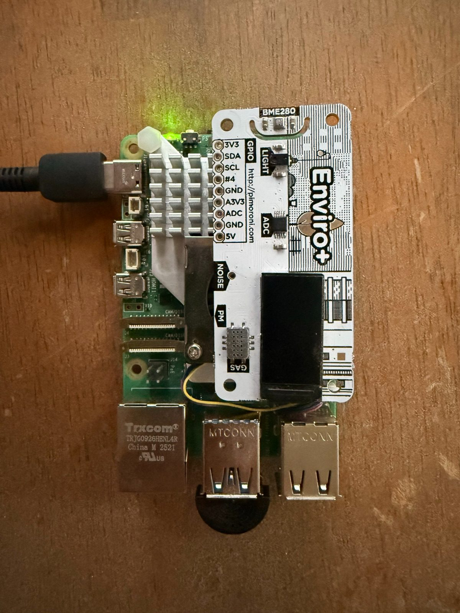
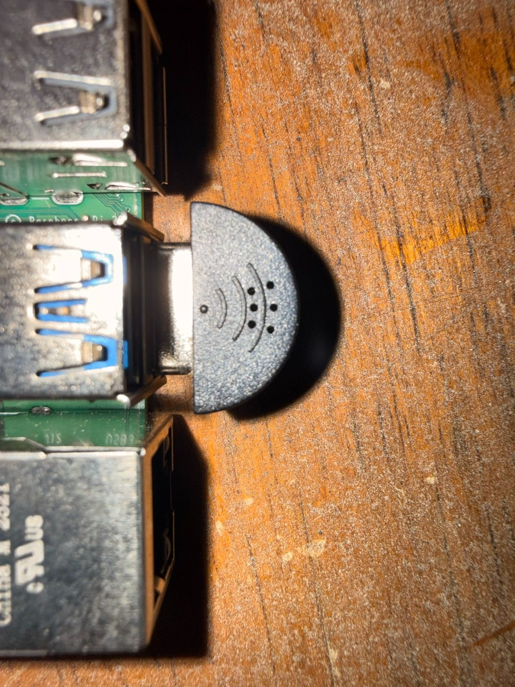

Raspberry Pi BirdNET Monitoring Station
I built a Raspberry Pi-powered bird monitoring station that listens to birds around the property 24/7, identifies them locally using BirdNET, stores detections and audio clips, and makes the results available through a web dashboard.
The best part is that the basic system is surprisingly simple. You only need a Raspberry Pi, a USB microphone, a microSD card, power, and Wi-Fi.
This guide walks through the same basic setup so anyone can build their own.


on this page
What It Does
Listens 24/7
A USB microphone continuously monitors the surrounding area for bird calls and songs.
Identifies Birds with AI
BirdNET analyzes the audio and identifies likely bird species using a machine-learning model.
Saves Detections
Each detection can include the species, timestamp, confidence score, audio clip, and spectrogram.
Runs Locally
The bird identification happens directly on the Raspberry Pi instead of requiring a cloud service.
Web Dashboard
BirdNET-Pi provides a local web interface where detections, recordings, species, and statistics can be viewed.
Remote Access
The Pi can optionally be accessed remotely using something such as Tailscale without exposing SSH directly to the internet.
Parts List
No case, no GPS, no sensor boards. The core build is just the five things below.
required
Raspberry Pi
requiredMy backyard station (pictured above) runs on a Raspberry Pi 5, and my second station runs on a Raspberry Pi 3 Model A+.
Other Raspberry Pi models capable of running a modern 64-bit Raspberry Pi OS can also work.
> raspberry pi 5 (4gb) on amazon ↗USB Microphone
requiredAny Linux-compatible USB microphone can work. I use the Adafruit Mini USB Microphone. It's small, but it works great!
This is the most important sensor in the build. A better microphone and better microphone placement can improve detection quality substantially.
> adafruit mini usb mic ↗microSD Card
required32 GB or larger recommended.
Power Supply
requiredUse a reliable power supply designed for the Raspberry Pi model being used.
Wi-Fi
requiredThe Raspberry Pi needs network access for setup, the web dashboard, remote administration, and optional website integrations.
The Pi 3 A+ is the cheapest option, but it only has 512 MB of RAM. BirdNET-Pi runs on it, but mine locked up until I added a swap file and set it to boot to the console instead of the desktop. If you have a Pi with more memory, use it and skip that headache.
recommended
USB Extension Cable
recommendedA USB extension cable lets you position the microphone farther away from the Raspberry Pi and closer to where birds are actually being heard.
This can also reduce noise picked up from electronics near the Pi.
optional
Enviro+ Sensor
optionalAn Enviro+ or similar environmental sensor can be added if you want to record temperature, humidity, pressure, or other environmental information alongside bird detections.
This is not required for BirdNET. Mine is the Pimoroni Enviro + Air Quality version, which adds a gas sensor.
> enviro+ at pimoroni ↗Tailscale
optionalTailscale can provide secure remote access if the station is installed somewhere other than your own house.
Weather Protection
optionalIf the Raspberry Pi or microphone is installed outside, create appropriate weather protection. My Pi is not in a case, so a case is not part of the core build.
You do not need a GPS receiver. A station that stays in one place only needs its approximate location typed in once (see step 7).
How the System Works
Sound goes in one end and bird detections come out the other. Everything in the main path runs on the Pi itself.
- Bird
- USB Microphone
- Raspberry Pi
- BirdNET
- Species Detection
- Database / Audio Clips
- Web Dashboard
- Website / Remote Notificationssee step 11 and phone notifications
01Install Raspberry Pi OS
Download Raspberry Pi Imager on another computer (Windows, Mac, or Linux all work), then use it to flash Raspberry Pi OS (64-bit) to the microSD card. The Lite version without a desktop is a good choice here since the Pi will run headless anyway.
Before writing the card, open the Imager's settings screen and configure:
- Hostname
- Username
- Password
- Wi-Fi SSID
- Wi-Fi password
- SSH (turn it on)
SSID just means the Wi-Fi network name, the one you pick from the list on your phone.
Insert the microSD card into the Raspberry Pi, plug in the USB microphone, and power it on. Give it a couple of minutes on the first boot.
02Find the Raspberry Pi
You need the Pi's IP address to talk to it. If you have a keyboard and monitor plugged into the Pi, run this on the Pi:
hostname -INo monitor? Your router's admin page usually lists connected devices by hostname, so look for the name you picked in step 1.
My BirdNET Raspberry Pi is currently on:
10.0.0.16That address is from my home network. Yours will probably be different, so use whatever hostname -I or your router shows you.
From another computer, check the Pi responds:
ping YOUR_PI_IPping 10.0.0.16Press Ctrl+C to stop the ping. If you see replies, the Pi is on the network.
03SSH Into the Pi
SSH lets you type commands on the Pi from your own computer. Open Terminal (Mac/Linux) or PowerShell (Windows) and run:
ssh USERNAME@YOUR_PI_IPssh pi@10.0.0.16The username is whatever you chose in Raspberry Pi Imager. The first time you connect it asks you to confirm the Pi's fingerprint; type yes, then enter your password.
04Make Sure the Microphone Works
List the recording devices the Pi can see:
arecord -lA USB audio capture device should appear, something like card 2: Device [USB PnP Sound Device]. Note the card number. For the full list of device names, run:
arecord -LThen record a 10 second test:
arecord -d 10 test.wavAnd play it back:
aplay test.wavIf you can hear the surrounding environment clearly, the microphone is working.
If the recording is silent, the default device may not be your USB mic. Point arecord at the card number from above, for example arecord -D plughw:2,0 -f S16_LE -r 48000 -d 10 test.wav.
No speaker on the Pi? Copy the file to your computer and listen there: scp USERNAME@YOUR_PI_IP:test.wav .
Microphone placement matters a lot. Recommended placement:
- Point it toward the area where birds are usually active.
- Keep it away from HVAC equipment.
- Keep it away from televisions and speakers.
- Avoid placing it directly next to the Raspberry Pi.
- Protect it from rain.
- Try to reduce nearby traffic or mechanical noise when possible.
05Install BirdNET-Pi
BirdNET-Pi is the software layer that turns the Raspberry Pi into a continuously operating bird detector. It:
- Records audio
- Analyzes bird sounds
- Identifies likely species
- Saves detections
- Stores useful audio clips
- Generates spectrograms
- Provides a web dashboard
BirdNET-Pi has several maintained community versions. Check the linked project repository for the current installation command before installing.
The version I installed: github.com/Nachtzuster/BirdNET-Pi ↗. Its README has the install command. The installer runs for a while, so let it finish before touching anything.
After installation, reboot:
sudo reboot06Open the BirdNET Dashboard
On your local network, the dashboard is usually reachable by the Pi's hostname or its IP address. Open a browser on any computer or phone on the same Wi-Fi and try:
http://birdnetpi.localor:
http://YOUR_PI_IPFor my current Pi:
http://10.0.0.16Again, 10.0.0.16 is my local network address, not one you should copy. Swap birdnetpi for whatever hostname you set in step 1.
The dashboard can show things such as:
07Configure Location
BirdNET uses geographic information and time of year to help decide which species are likely to occur in your area. A bird that never shows up in your region gets ruled out, which cuts down on false matches.
For a stationary bird detector, manually entering the approximate latitude and longitude in the BirdNET-Pi settings is enough. The installer may fill in a guess based on your internet connection, so check it. A GPS receiver is not needed unless you want a mobile system.
Do not publish the exact latitude and longitude of a private residence on a public website. Rounding to a nearby town is plenty for BirdNET.
08Tune Detection Settings
Every detection comes with a confidence score. The confidence threshold decides how sure BirdNET has to be before it saves a detection.
More false positives
Higher confidence
Start somewhat permissive, review the detections for several days, and then adjust based on your microphone and how noisy your spot is. There is no single right number; a quiet backyard and a spot next to a busy road behave very differently.
09Let It Run Automatically
Once installed, BirdNET-Pi runs as a set of system services, so it starts listening again on its own after a reboot or power outage.
- Power On
- Raspberry Pi Boots
- Wi-Fi Connects
- BirdNET Services Start
- Microphone Begins Listening
- Detections Appear
That makes it suitable for unattended 24/7 operation. To confirm the recording and analysis services are running:
systemctl status birdnet_recording birdnet_analysisBoth should say active (running). Press q to exit.
10Optional: Remote Access with Tailscale
optional
If the station lives somewhere other than your house, you will want to reach it without being on the same Wi-Fi. The tempting shortcut is forwarding a port on the router, but that puts SSH on the open internet. Tailscale is the approach I recommend instead: it creates a private network between your own devices, so nothing is exposed publicly.
Install it on the Pi:
curl -fsSL https://tailscale.com/install.sh | shThen connect it to your Tailscale account (it prints a link to log in):
sudo tailscale upInstall Tailscale on your own computer too. Once both are on the same Tailscale network, you can SSH into the Pi and open its dashboard from anywhere, using the Tailscale address shown in the Tailscale app.
11Put the Data on Your Own Website
advanced
BirdNET-Pi keeps its detections in a local database on the Pi. That data can feed a separate public dashboard, which is how the birds page on this site works.
In my setup, a small Python script on the Pi runs every 10 minutes. It reads the latest detections, writes them to a JSON file along with short audio clips, and pushes them to this website's GitHub repository. The web page just reads that JSON file. The Pi only ever sends data out, so nothing on it is open to the internet.
- BirdNET
- Detection Database
- Small export/API script
- Website
- Public Bird Dashboard
You don't have to do it the same way. Fields worth showing:
If you are comfortable with JavaScript, PHP, Python, APIs, or databases, you can build this part yourself.
Optional: Phone Notifications
optional
Detections can also send a notification to your phone. My backyard station messages me on Telegram using a small script. Other options include:
- Bird Call
- BirdNET Detection
- High Confidence Match
- Push Notification
Tip: only notify on high-confidence matches and add a cooldown per species, or a chatty robin will blow up your phone.
Troubleshooting
Pi is not reachable
On the Pi (if you have a screen attached), check it has an address:
hostname -IThen try from your computer:
ping YOUR_PI_IPVerify the Pi is connected to the correct Wi-Fi network. If necessary, run:
sudo raspi-configThen go to the wireless network settings and reconnect it.
BirdNET website does not load
First check whether the Pi itself responds to ping. If the Pi is reachable but the BirdNET web interface is not, BirdNET or its web service may not have started correctly. Reboot:
sudo rebootThen check again.
No microphone detected
arecord -lIf nothing shows up, try reconnecting the USB microphone (or a different USB port) and rebooting.
If the mic shows up but BirdNET hears nothing, another program may be holding it. On my Pi 3 A+, PulseAudio kept grabbing the mic at boot before BirdNET could. Turning off PulseAudio's autospawn (and disabling it) fixed it for good.
Lots of incorrect bird detections
Possible causes:
- Detection threshold too low
- Poor microphone placement
- Television audio
- HVAC noise
- Traffic
- Music
- Electronics near the microphone
Try relocating the microphone and adjusting BirdNET's confidence settings (see step 8).
Pi changed IP addresses
Routers can hand out a different local IP after the Pi reconnects. Fixes:
- Check hostname -I again
- Use the hostname (like birdnetpi.local) if mDNS is working
- Reserve an IP address for the Pi in your router settings
- Use Tailscale for remote administration
Pi freezes or becomes unreachable after a while
This is usually running out of memory, especially on 512 MB boards like the Pi 3 A+. What fixed mine: adding a swap file, booting to the console instead of the desktop, and turning off services I didn't need. A Pi with more RAM avoids the problem entirely.
Cost
If you already own a Raspberry Pi, this is a fairly inexpensive project. The only must-buy is usually the USB microphone.
| Part | Required? | Notes |
|---|---|---|
| Raspberry Pi | yes | Pi 3-class hardware or better |
| USB microphone | yes | Linux-compatible (I use the Adafruit mini mic) |
| microSD card | yes | 32 GB+ |
| Power supply | yes | Appropriate for the Pi |
| USB extension | recommended | Helps with microphone placement |
| Enviro+ | no | Adds environmental monitoring |
| Tailscale | no | Free option for remote access |
What I Learned
This started as a bird project and turned into a crash course in keeping a small Linux box alive on its own. It pulled together:
Final Result
Once everything is running, the station can sit unattended and continuously listen for wildlife.
Birds call nearby, the microphone captures the audio, BirdNET identifies the species, and detections automatically appear in the dashboard.
What started as a Raspberry Pi and a USB microphone became a small always-on wildlife monitoring system.